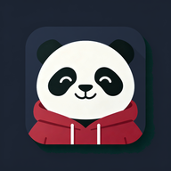

Daily real-life phrases, tone training, and blind-speak practice. 100 survival lines, a few minutes a day.
🗣️ Blind-speak mode — we don't score your pronunciation yet. Just cover and say it 3×.
🔒 Privacy: your recording is used only to score that line. It is never saved, never shared, and never linked to you. Tap Score → say the line → tap Stop.
Pick a place. Learn the few lines that actually come up there.
Fourteen days, five minutes each. Finish them and you can survive in China.
Tap a tone to hear it. Then try the quiz.
Last 14 days — red means you completed a challenge.
Your progress lives in this browser. Export it before clearing your data or switching phones — then paste it here to restore.
Characters you starred for later review. Tap the speaker to hear one again.
Pick a mode and complete a prompt to start tracking.
Paste any Chinese text. Tap a word for pinyin, meaning and audio.